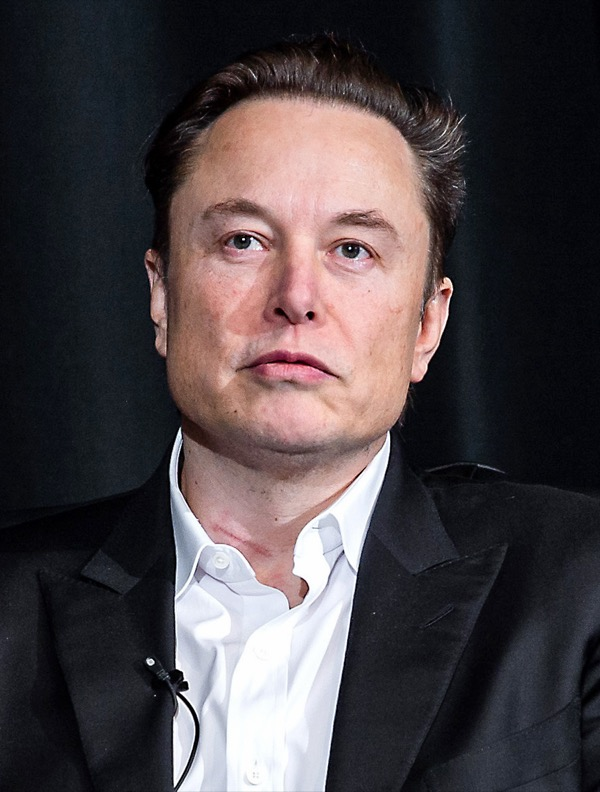

LAB ─ TESLA概要 ─ 01/34
TESLATSLA ─ FRONTIER LAB 企業資料 車・エネルギー・ロボットの会社
EV・蓄電池・運転支援・ロボットを手がける会社。売上は横ばいでも、市場がTeslaを見るものさしは車の台数からロボットとエネルギーへ移っています。
売上（2026年7-9月期）
280億4,600万ドル（4兆3,191億円、1ドル=154円で換算）
前年同期比0.2%減（前年同期は280億9,500万ドル）
僕が最初に見るのは増減の中身です。自動車が減り、サービスその他が増えて総額が横ばいになりました。
2026年7-9月期／Tesla 2026年第3四半期 Update（SEC 8-K Exhibit 99.1、2026年10月21日）
納車台数（2026年7-9月期）
486,532台
前年同期比2%減（前年同期は497,099台）。生産台数は464,391台で納車を下回りました
台数は2四半期連続で48万台を超えました。在庫日数は11日まで戻り、売れ残りではなく生産側が上限になっています。
2026年7-9月期／Tesla 2026年第3四半期 Update（SEC 8-K Exhibit 99.1、2026年10月21日）
営業利益（2026年7-9月期）
7億1,800万ドル（1,106億円）、営業利益率2.6%
前年同期は16億2,400万ドル、営業利益率5.8%。利益率は3.2ポイント低下しました
粗利は54億9,400万ドルまで回復しました。営業費用47億7,600万ドルがその大半を吸収しています。先行投資の重さが利益率に出ています。
2026年7-9月期／Tesla 2026年第3四半期 Update（SEC 8-K Exhibit 99.1、2026年10月21日）
FSD有料利用（2026年7-9月期末）
174万件
前年同期比67%増（前年同期は104万件）
買い切りと月額契約を合わせた有料件数です。車を売った後も続く課金の土台は台数より速く伸びています。
2026年7-9月期／Tesla 2026年第3四半期 Update（SEC 8-K Exhibit 99.1、2026年10月21日）
全文を無料公開中 ─ 全34スライドを掲載しています
出典：KPIの出典は各指標の下に記載。数字は各社の決算資料による
LAB ─ TESLA目次 ─ 02/34
CONTENTS
この資料の地図 章の見出しだけを追えば、この会社の今の姿が分かります。
01 概要 論点と事業の形、直近の四半期
02 成長の変遷 売上の推移と会社の沿革
03 テーマ詳解 8つのテーマを1枚ずつ読む
04 エコシステム 提携と買収の相手
05 CEOと製品 経営者の軸と製品の一覧
06 競合比較 弱点と次の決算で見る数字
07 動画・用語 柏原の解説動画と基本の言葉
LAB ─ TESLA概要 ─ 03/34
FOCUS
今の論点は3つ 判定は次の決算で行う。
1
車の利益率の低下は止まるか
営業利益率は2.6%で、前年の5.8%から半分以下になった。価格競争の中で、車そのものの稼ぐ力がどこまで削られるかを見る。
自動車の売上（前回205億6,000万ドル）と営業利益率
2
エネルギーが第2の柱になるか
蓄電池の出荷は13.7ギガワット時、Megapackの年間製造能力は3拠点で110ギガワット時。データセンターの電力需要を取る側に回れるかが論点。
蓄電池の出荷量と、エネルギー部門の売上
3
市場が見ているのは車ではなくなった
FSDの有料利用は174万件で前年比67%増。売上は横ばいでも、市場がTeslaに付ける物差しは台数からロボットとエネルギーへ移っている。
FSDの有料利用件数と、Optimusの進み具合
LAB ─ TESLA概要 ─ 04/34
MAP
Teslaの8つのテーマ 8つのテーマで全体像を組み立てる。
01 車・エネルギー・ロボットの会社 948億2,700万ドル（約14兆6,034億円、前年比3%減）
02 車の買い手と、電力を急ぐデータセンター 174万件（前年比67%増）
03 車・Megapack・FSD・Optimus 計110ギガワット時（3拠点）
04 車の売上が大半、利益はエネルギーとサービスへ 205億6,000万ドル（約3兆1,662億円）
05 電池・チップ・AIまで自前で持つ 13.7ギガワット時
06 走った距離がそのまま強みになる 欧州9か国
07 薄くなった利益率と、膨らむ設備投資 2.6%（前年は5.8%）
08 蓄電池の出荷・無人走行・設備投資 13.7ギガワット時
LAB ─ TESLA概要 ─ 05/34
MODEL
お金の流れと、製品 自動車、蓄電・発電、充電・修理などの関連サービス。将来のロボット構想とは分ける。
電気自動車：Model 3、Model Yなど
蓄電：Powerwall、Megapack
FSD (Supervised)：運転者の監督が必要
Optimus：人型ロボット開発
LAB ─ TESLA概要 ─ 06/34
LATEST QUARTER
直近の四半期 ─ 統一した物差しで見る Teslaの売上の7割強はいまも車で、エネルギーとサービスが残りを占めます。
売上（2026年7-9月期）
280億4,600万ドル（4兆3,191億円、1ドル=154円で換算）
前年同期比0.2%減（前年同期は280億9,500万ドル） ─ 僕が最初に見るのは増減の中身です。自動車が減り、サービスその他が増えて総額が横ばいになりました。
納車台数（2026年7-9月期）
486,532台
前年同期比2%減（前年同期は497,099台）。生産台数は464,391台で納車を下回りました ─ 台数は2四半期連続で48万台を超えました。在庫日数は11日まで戻り、売れ残りではなく生産側が上限になっています。
営業利益（2026年7-9月期）
7億1,800万ドル（1,106億円）、営業利益率2.6%
前年同期は16億2,400万ドル、営業利益率5.8%。利益率は3.2ポイント低下しました ─ 粗利は54億9,400万ドルまで回復しました。営業費用47億7,600万ドルがその大半を吸収しています。先行投資の重さが利益率に出ています。
FSD有料利用（2026年7-9月期末）
174万件
前年同期比67%増（前年同期は104万件） ─ 買い切りと月額契約を合わせた有料件数です。車を売った後も続く課金の土台は台数より速く伸びています。
四半期の要点 ─ 自動車の売上205億6,000万ドルは全体の73.3%を占めます。営業利益率は2.6%まで下がっています。粗利54億9,400万ドルの大半を営業費用47億7,600万ドルが吸収する構造で、エネルギーとサービスの粗利が増えても費用の伸びが速ければ利益は残りません。
出典：2026年7〜9月期、Tesla 2026年第3四半期 Update（SEC 8-K、2026年10月21日）より。
LAB ─ TESLA成長の変遷 ─ 07/34
REVENUE
売上は2018年から2025年で4.4倍 直近の年度は948億ドル、前年比-3%。
361億ドル 722億ドル 1,094億ドル 2018 2019 2020 2021 2022 2023 2024 2025 215億ドル 948億ドル 2019年-2022年 ─ 転換点
上海工場の稼働とModel Yの投入で量産の会社へ変わりました。売上は2019年の245億7,800万ドルから2022年の814億6,200万ドルへ3.3倍になりました。生産拠点と車種が増えた時期に、Teslaの物差しは台数と売上へ移りました。
2023年-2025年 ─ 転換点
値下げと競争で成長が止まりました。売上は2023年の967億7,300万ドル、2024年の976億9,000万ドル、2025年の948億2,700万ドルと推移し、2025年は前年比2.9%減で初めて減りました。一方でエネルギー事業の売上は2024年に100億8,600万ドルへ届き、第2の柱の候補になりました。
2026年7-9月期 ─ 転換点
事業の重心が車の販売からサービスと自動化へ動き始めました。サービスその他の売上は46億500万ドルで前年同期比32.5%増え、FSD有料利用は174万件になりました。9月3日にオースティンでCybercabのロボタクシー運行を始め、Optimusの生産もフリーモントで始まりました。同じ四半期に営業費用が39%増えたため、転換の費用も同時に表面化しています。
出典：12月31日決算。2025年度（2025年1〜12月）まで。
LAB ─ TESLA成長の変遷 ─ 08/34
REVENUE DETAIL
年度ごとの売上と伸び グラフと同じ数字を年度ごとに前年比つきで並べます。
出典：12月31日決算。2025年度（2025年1〜12月）まで。
LAB ─ TESLA成長の変遷 ─ 09/34
HISTORY
いまの形ができた転機 創業から直近までの転機を一次情報の発表日で並べます。
2012
Model Sの納車を開始
6月22日にModel Sを最初の顧客へ納車しました。
2015
家庭用蓄電池Powerwall
5月に最初のPowerwallを設置し、家庭で電気をためて使う製品を始めました。
2019
Megapackを発表
大型の蓄電製品Megapackの導入は2019年第3四半期の資料で発表されました。
2024
蓄電の導入が拡大
この年の蓄電の導入量は31.4ギガワット時、エネルギー事業の売上は100億8,600万ドル（約1兆5,532億円）でした。
出典：各社の公式発表・年次報告書による
LAB ─ TESLA成長の変遷 ─ 10/34
NUMBERS
いまの数字 各テーマの先頭の数字を並べた。
2025年度の売上 ─ 車・エネルギー・ロボットの会社
948億2,700万ドル（約14兆6,034億円、前年比3%減）
FSDの有料利用 ─ 車の買い手と、電力を急ぐデータセンター
174万件（前年比67%増）
Megapackの年間製造能力 ─ 車・Megapack・FSD・Optimus
計110ギガワット時（3拠点）
自動車の売上 ─ 車の売上が大半、利益はエネルギーとサービスへ
205億6,000万ドル（約3兆1,662億円）
LFP電池セルを使うMegapackを含む蓄電池の出荷 ─ 電池・チップ・AIまで自前で持つ
13.7ギガワット時
FSDの認可 ─ 走った距離がそのまま強みになる
欧州9か国
LAB ─ TESLAテーマ詳解 ─ 11/34
THEME 01 / 08
車・エネルギー・ロボットの会社 Teslaは電気自動車を軸に、蓄電池のエネルギー事業、自動運転、人型ロボットまで手がける会社です。
2025年度の売上
948億2,700万ドル（約14兆6,034億円、前年比3%減）
2026年7〜9月期の売上
280億4,600万ドル（約4兆3,191億円）
読み方 ─ 売上は横ばいでも、市場がTeslaを見るものさしは車の台数からロボットとエネルギーへ移っています。
出典：2025年度、数字は2026年7〜9月期、Tesla 年次報告書10-K（2025年度、2026年1月29日提出）より。
LAB ─ TESLAテーマ詳解 ─ 12/34
THEME 02 / 08
車の買い手と、電力を急ぐデータセンター Teslaの顧客は車の買い手に加え、電力の不足に直面する電力会社やデータセンターに広がっています。
蓄電池の出荷
13.7ギガワット時（前年は12.5）
読み方 ─ Updateは蓄電池が既存の送電網に電力を足す最も速い手段で、データセンターの稼働にも欠かせないと書いています。
出典：2026年7〜9月期、Tesla 2026年第3四半期 Update（SEC 8-K、2026年10月21日）より。
LAB ─ TESLAテーマ詳解 ─ 13/34
THEME 03 / 08
車・Megapack・FSD・Optimus Teslaの製品は車、蓄電池Megapack、自動運転ソフトFSDとロボタクシー、人型ロボットOptimusの4つです。
Megapackの年間製造能力
計110ギガワット時（3拠点）
Cybercabの年間製造能力
テキサスで125,000台超（自社フリート向け）
読み方 ─ Megapackの年間製造能力110ギガワット時に対し、2026年7〜9月期の蓄電池出荷は13.7ギガワット時です。年換算では54.8ギガワット時のペースにとどまる計算で、工場の余力を使い切るには出荷をいまの2倍近くまで伸ばす必要があります。
出典：2026年9月末、Tesla 2026年第3四半期 Update（SEC 8-K、2026年10月21日）より。
LAB ─ TESLAテーマ詳解 ─ 14/34
THEME 04 / 08
車の売上が大半、利益はエネルギーとサービスへ Teslaの売上の7割強はいまも車で、エネルギーとサービスが残りを占めます。
自動車の売上
205億6,000万ドル（約3兆1,662億円）
エネルギーの売上
28億8,100万ドル（約4,437億円）
読み方 ─ 自動車の売上205億6,000万ドルは全体の73.3%を占めます。営業利益率は2.6%まで下がっています。粗利54億9,400万ドルの大半を営業費用47億7,600万ドルが吸収する構造で、エネルギーとサービスの粗利が増えても費用の伸びが速ければ利益は残りません。
出典：2026年7〜9月期、Tesla 2026年第3四半期 Update（SEC 8-K、2026年10月21日）より。
LAB ─ TESLAテーマ詳解 ─ 15/34
THEME 05 / 08
電池・チップ・AIまで自前で持つ Teslaの業界での立ち位置は電池からチップ、AIまでを自社で抱え込む垂直統合の会社です。
LFP電池セルを使うMegapackを含む蓄電池の出荷
13.7ギガワット時
自前の半導体工場の建設を進める局面の設備投資
47億3,200万ドル（約7,287億円、2026年7〜9月期の全社設備投資）
読み方 ─ 電池とチップを自前で持つ範囲が広がるほど、量産に乗ったときの利益は厚くなります。一方で設備投資は四半期で47億3,200万ドルに達していて、売上が立つ前の支出が先に重くなる構造も数字に出ています。
出典：2026年10月、Tesla 2026年第3四半期 Update（SEC 8-K、2026年10月21日）より。
LAB ─ TESLAテーマ詳解 ─ 16/34
THEME 06 / 08
走った距離がそのまま強みになる Teslaが選ばれる理由はFSDとロボタクシーで積み上がる走行データと、蓄電池の量産規模です。
累計の無人走行
200万マイル近く（前四半期の8倍）
読み方 ─ 納車が前年同期比2%減る中でもFSDの有料利用は67%増えました。車の販売台数が伸びなくても走行データと月額課金が積み上がる点が台数だけを物差しにする自動車会社と違う収益の形です。
出典：2026年9月末、Tesla 2026年第3四半期 Update（SEC 8-K、2026年10月21日）より。
LAB ─ TESLAテーマ詳解 ─ 17/34
THEME 07 / 08
薄くなった利益率と、膨らむ設備投資 Teslaの注意点は車の利益率の低下と、Optimusやチップ工場に向けた設備投資の重さです。
設備投資
47億3,200万ドル（約7,287億円）
読み方 ─ 新しい事業が売上になる前に設備のお金が先に出ていくので、ここ数四半期は利益が細く見える局面が続きます。
出典：2026年7〜9月期、Tesla 2026年第3四半期 Update（SEC 8-K、2026年10月21日）より。
LAB ─ TESLAテーマ詳解 ─ 18/34
THEME 08 / 08
蓄電池の出荷・無人走行・設備投資 Teslaの決算で最初に見るのは車の台数より蓄電池の出荷・ロボタクシーの走行・設備投資の3つです。
設備投資
47億3,200万ドル（約7,287億円）
読み方 ─ 次の決算ではOptimusの製造能力の表が「Early Ramp」から次の段階へ進むかを確認します。蓄電池の出荷13.7ギガワット時と設備投資47億3,200万ドルの伸びも並べて見ます。
出典：2026年7〜9月期、Tesla 2026年第3四半期 Update（SEC 8-K、2026年10月21日）より。
LAB ─ TESLAエコシステム ─ 19/34
ECOSYSTEM
つながりの相手 提携と買収の相手から、会社の広がりを読む。
Panasonic Panasonic電池供給・製造協力
Gigafactoryの建設・運営で協力し、Panasonicが電池セルを製造・供給する契約を発表。発表時点の関係です。
2014-07-31 Ford Ford充電網の共同利用
北米のFord EV利用者がTesla Superchargerを利用するための合意を発表。自動車では競争相手です。
2023-05-25 General Motors General Motors充電規格・充電網の連携
NACS採用とSuperchargerへのアクセス拡大を発表。使える条件は地域と車種ごとに決まっています。
2023-06-08 出典：各社の発表資料による
LAB ─ TESLAエコシステム ─ 20/34
ECOSYSTEM
つながりの相手（続き） 相手の顔ぶれがこの会社の事業の広がりを決めます。
bp pulse bp pulse充電設備の顧客
Teslaの超急速充電設備を1億ドル（約154億円）で購入する計画を発表。bp独自の充電網向けの取引です。
2023-10-26 Intersect Power Intersect Power大型蓄電設備の顧客
2030年までの太陽光・蓄電事業向けに15.3GWhのMegapack契約を発表。契約容量は数年にわたる納入の合計です。
2024-07-18 出典：各社の発表資料による
LAB ─ TESLAエコシステム ─ 21/34
CONNECTIONS
対象6社の中での位置 各社の入口の見出しを並べ、6社が互いの顧客であり競合でもある関係を読みます。
IonQ
イオン方式の量子コンピュータから、通信・センサーまで ─ 詳しくは
IonQの資料 へ
SoFi
学生ローンから「金融のなんでもアプリ」へ ─ 詳しくは
SoFiの資料 へ
AMD
GPUとCPUの両方を持つ半導体会社 ─ 詳しくは
AMDの資料 へ
出典：FRONTIER LAB 対象6社の資料による
LAB ─ TESLACEOと製品 ─ 22/34

Elon Musk（イーロン・マスク）（CEO（2008年10月から））
CEO STATEMENT
Elon Musk
「需要を最も押し上げているのは完全自動運転です。今日、購入できる車の中でFSDの競合は本当に存在しません。」
"The biggest driver for demand is full self-driving. And today, there's really no competitor for FSD in any car that you can buy."
2026年10月21日／Tesla 2026年第3四半期 決算説明会（2026年10月21日）の書き起こし
僕はこの発言を、値下げではなくソフトで需要を作る宣言として読みます。根拠は同じ四半期の数字で、北米の新車納車に占めるFSDの装着率は75%を超え、有料利用は174万件まで増えました。
出典：発言は各社の決算説明会・公式発表による
LAB ─ TESLACEOと製品 ─ 23/34
CEO QUOTES
経営者の発言で読む、今の軸 「2027年分のMegapackはほぼ完売しています。需要に応えるため、できるだけ速く生産を増やしています。その粗利率も大きく上がると見ています。」
2026年10月21日／Tesla 2026年第3四半期 決算説明会（2026年10月21日）の書き起こし ─ 原文：We're actually almost sold out of all Megapacks for 2027, and we're ramping production as quickly as possible to meet demand. We also expect gross margins on that to increase meaningfully.
エネルギー部門の売上は28億8,100万ドルで前年同期を下回りました。受注の強さと売上の弱さが同居するので、来年分の完売が納入と売上に変わるかを確認する発言です。
「Optimusの伸びはS字曲線です。ただし曲線の最初の部分は傾きが緩く、少しでこぼこします。根本的に新しい製品だからです。」
2026年10月21日／Tesla 2026年第3四半期 決算説明会（2026年10月21日）の書き起こし ─ 原文：the growth of Optimus, it's an S-curve, but the initial part of the S-curve is -- has a shallow slope and is somewhat bumpy because it is such a radically new product.
同じ冒頭発言で、外部の企業へOptimusを届ける時期は来年末ごろになると述べました。年産100万台規模のラインをフリーモントに据えました。それでも量産の立ち上がりには1年以上かかると経営者自身が認めた形です。
出典：発言は各社の決算説明会・公式発表による
LAB ─ TESLACEOと製品 ─ 24/34
PRODUCT GUIDE
製品の一覧と稼ぎ方 製品ごとに、誰に売り、どう課金するかを見る。
1
電気自動車（Model 3、Model Y、Model S、Model X、Cybertruck）
買い手は個人と法人です。車両の販売代金で課金し、リースと規制クレジットも含みます。2026年7-9月期の自動車売上は205億6,000万ドル、納車は486,532台で、Model 3とModel Yが478,237台を占めました。
2
商用車と次世代車（Tesla Semi、Cybercab、Roadster）
Semiは運送事業者に車両として売ります。ネバダで量産が始まり、年間製造能力は25,000台です。Cybercabは個人へ売る前に自社フリートへ入れ、テキサスの年間製造能力は125,000台を超えます。次世代Roadsterは2026年10月15日に公開され、販売はまだ始まっていません。
3
エネルギー発電・蓄電（Megapack、Powerwall、太陽光）
買い手は電力会社、データセンター、家庭です。設備の販売代金で課金します。2026年7-9月期の売上は28億8,100万ドル、粗利は9億5,400万ドルで粗利率は33.1%でした。蓄電池の出荷は13.7ギガワット時、Megapackの年間製造能力は3拠点で110ギガワット時です。
4
サービスその他（充電、整備、部品、保険など）
利用者はTeslaのオーナーと外部の充電利用者です。充電料金、整備と部品の代金、保険料で課金します。2026年7-9月期の売上は46億500万ドル、粗利は7億3,400万ドルで過去最高でした。スーパーチャージャーは8,904か所、コネクターは84,465基です。
5
FSD (Supervised)
買い手はTeslaのオーナーです。買い切りと月額契約の両方で課金し、有料利用は買い切りと月額を合わせた件数で数えます。2026年9月末の有料利用は174万件、北米の新車納車に占める装着率は75%を超えました。運転者の監督が必要な水準で、車を無人にしません。
6
ロボタクシー
利用者はオースティンの乗客です。自社フリートのCybercabに乗る形で課金し、運行は午前6時から深夜までです。2026年9月3日に運行を始め、四半期末の累計無人走行は200万マイル近く、前四半期の8倍になりました。売上は部門として分けて開示されていません。
7
Optimus（人型ロボット）
現時点の使い手はTesla自身です。フリーモントで生産が始まり、テキサスは建設中です。2026年7-9月期に売上は立っておらず、外部の企業へ届ける時期は2027年末ごろと経営者が述べました。課金の形も価格も未定です。
出典：製品情報は各社の公式発表・決算資料による
LAB ─ TESLA競合比較 ─ 25/34
RIVALS
競合比較 ─ 規模と、重なる点と違う点 Teslaと正面から重なる相手を、規模・成長率・重なる点・違う点で並べる。
BYD（中国）
規模 ─ 2026年7-9月期の売上は2,214億8,800万元、販売台数は132万台でTeslaの2.7倍です。輸出は550,704台でした／成長 ─ 売上は前年同期比13.59%増、販売台数は18.8%増、輸出は137%増です
重なる点 ─ 電気自動車とプラグインハイブリッドで正面から重なります。中国と欧州で価格帯も競合します
違う点 ─ BYDは車両販売そのものが収益の中心です。TeslaはFSDの月額課金、充電網、蓄電池まで売ります。台数では大きく離されています。
Rivian（米国）
規模 ─ 2026年7-9月期の売上は21億5,500万ドル、納車は19,248台でTeslaの4%弱です。純損失は9億1,300万ドルでした／成長 ─ 売上は前年同期比38.3%増、納車は45.8%増です。ソフト・サービス売上は6億500万ドルで45%増でした
重なる点 ─ 米国の電気自動車で重なります。ソフトとサービスの課金を持つ点も似ています
違う点 ─ Rivianのソフト収入にはフォルクスワーゲンとの合弁向け開発サービスが含まれます。Teslaの課金は自社フリートと自車オーナー向けで、蓄電とロボタクシーまで広がります
General Motors（米国）
規模 ─ 2026年7-9月期の売上は500億1,500万ドルでTeslaの1.8倍です。米国の販売は671,000台でした／成長 ─ 売上は前年同期比2.9%増、調整後EBITは41億ドルで21.6%増です
重なる点 ─ 北米のピックアップとSUVで重なります。運転支援Super CruiseとOnStarの定期課金も持ちます
違う点 ─ GMのデジタル売上は四半期で8億ドルを超えても全体の1.6%です。収益の柱はガソリン車で、Teslaは電気自動車のみに蓄電とロボットを重ねます
Ford（米国）
規模 ─ 2026年7-9月期の売上は495億2,600万ドルです。電気自動車部門Model eの売上は12億2,300万ドル、卸売は34,000台でした／成長 ─ 全体の売上は前年同期比2%減です。Model eの売上は31%減り、EBIT損失は10億5,800万ドルでした
重なる点 ─ 北米の電気自動車と商用車で重なります
違う点 ─ Fordはガソリン車のFord Blueと商用車のFord Proの利益で電気自動車の赤字を支えます。Teslaは電気自動車の粗利18.5%で黒字を保ち、課金もFSDまで届きます
Hyundai Motor（韓国）
規模 ─ 2026年7-9月期の売上は45兆1,100億ウォン、卸売は920,710台でTeslaの1.9倍です。営業利益は2兆6,772億ウォンでした／成長 ─ 売上は前年同期比3.4%減、卸売は11.3%減です。営業利益は5.5%増え、営業利益率は5.9%でした
重なる点 ─ 世界の電気自動車で重なります。価格帯もModel 3とModel Yに近い車種を持ちます
違う点 ─ Hyundaiはハイブリッド車16万7,414台の販売が利益率を支えました。全動力を持つ代わりに、FSDのような月額ソフト課金と自社充電網は持ちません
出典：BYD 2026年第3四半期報告書（香港証券取引所への開示、2026年10月29日）と月次販売開示／Rivian 2026年第3四半期 決算発表（SEC提出資料、2026年10月29日）／GM 2026年第3四半期 決算発表（SEC 8-K Exhibit 99.1、2026年10月20日）と同日の決算説明会／Ford 2026年第3四半期 決算発表と10-Q（2026年10月28日）／Hyundai Motor 2026年第3四半期 業績発表（同社IR、2026年10月29日）
LAB ─ TESLA競合比較 ─ 26/34
RISK
薄くなった利益率と、膨らむ設備投資 Teslaのリスクは利益の薄さと投資の重さが同時に進む点にあります。2026年7-9月期の営業利益率は2.6%まで下がり、設備投資は四半期で47億3,200万ドル、2026年の計画は200億ドルです（会社が示した概算の計画値）。ロボタクシーの無人走行は累計200万マイル近くまで伸びても売上として開示される規模には届かず、Optimusの外部販売は2027年末ごろの見通しです。新事業の売上が立つ前に費用と投資が先行する期間が長引けば、現金454億4,700万ドルを守りながら成長投資を続ける余裕が細ります。
次のスライドで角度別に見る ─ バリュエーション 自動車の粗利と価格競争 費用と設備投資の膨張 キーマンと報酬の連動
LAB ─ TESLA競合比較 ─ 27/34
BEAR CASE
反対側の論点 ─ 弱点を数字で見る 買う側の話だけでは資料にならない。批判側が使う数字と、崩れる条件を角度別に並べる。
バリュエーション
2026年11月13日の終値は390.22ドル、時価総額は1兆5,400億ドルでした。
直近12か月の売上1,035億7,000万ドルで割ると売上倍率は14.9倍、純利益32億1,800万ドルで割るとPERは479倍です。崩れる条件は明確です。ロボタクシーとOptimusの売上が立たないまま自動車の売上が再び減り、営業利益率が2.6%前後に留まれば、479倍を支える利益の伸びが消え、倍率の圧縮だけで株価に大きな下落余地が生まれます。
自動車の粗利と価格競争
自動車の粗利率は18.5%、規制クレジットを除くと18.1%でした。
クレジット売上は前年同期の4億1,700万ドルから1億1,300万ドルへ73%減り、Updateは為替を除いた平均販売価格の低下も明記しています。自動車売上205億6,000万ドルに対して粗利率が3ポイント下がると、粗利は6億1,700万ドル減り、営業利益7億1,800万ドルの大半が消えます。BYDが四半期に132万台を売る価格競争の中で値下げが続けば、この条件に届きます。
費用と設備投資の膨張
営業費用は47億7,600万ドルで前年同期比39%増え、研究開発費は27億6,100万ドルで69%増えました。
株式報酬は直近12か月で43億ドルに達し、純利益32億1,800万ドルを上回ります。設備投資は直近12か月で154億700万ドル、2026年の計画は200億ドルへ引き上げられました（説明会で示された概算の計画値）。営業キャッシュフロー直近12か月の187億1,000万ドルを設備投資が超える局面ではフリーキャッシュフロー直近12か月の33億300万ドルが細り続け、現金454億4,700万ドルの取り崩しが始まります。
キーマンと報酬の連動
Updateは営業費用の増加要因に2025年CEO業績賞与を含む株式報酬を挙げています。
同賞与の物差しには累計納車台数とFSD有料利用が入り、Updateの脚注も両指標を賞与の定義で数えると明記しています。経営の実行と株価に含まれる期待がElon Musk個人に寄る構造です。同氏が担う役割が縮小したり、SpaceXなど他事業へ重心が移ったりすれば、賞与の物差しと事業計画の両方が同時に揺らぎます。
出典：株価と時価総額は2026年11月13日終値の市場データ。売上と純利益の直近12か月合計はTesla 2026年第3四半期 Update（SEC 8-K、2026年10月21日）の四半期推移から算出／Tesla 2026年第3四半期 Update（SEC 8-K Exhibit 99.1、2026年10月21日）／Tesla 2026年第3四半期 Update（SEC 8-K、2026年10月21日）。設備投資計画は同日の決算説明会でCFOのVaibhav Tanejaが200億ドルへ改定すると発言（概算の計画値）／Tesla 2026年第3四半期 Update（SEC 8-K、2026年10月21日）の脚注と費用の説明、2026年10月21日の決算説明会の書き起こし
LAB ─ TESLA競合比較 ─ 28/34
WATCH
次の決算で見る数字 蓄電池の出荷・無人走行・設備投資
▸ 蓄電池の出荷 13.7ギガワット時
▸ FSDの有料利用 174万件
▸ 設備投資 47億3,200万ドル（約7,287億円）
LAB ─ TESLA競合比較 ─ 29/34
BEFORE THE EARNINGS
決算の前に確かめること 冒頭の論点3つについて、判定に使う数字を先に固定します。
1
車の利益率の低下は止まるか
見る数字 ─ 自動車の売上（前回205億6,000万ドル）と営業利益率
2
エネルギーが第2の柱になるか
見る数字 ─ 蓄電池の出荷量と、エネルギー部門の売上
3
市場が見ているのは車ではなくなった
見る数字 ─ FSDの有料利用件数と、Optimusの進み具合
出典：決算の後に「次の決算で見る数字」と並べて判定する
LAB ─ TESLA動画・X ─ 30/34
VIDEOS
柏原の解説動画 この会社を扱った直近の動画。
出典：YouTubeの公開情報による
LAB ─ TESLA用語 ─ 31/34
GLOSSARY
EV・蓄電・運転支援の基本 電気で走ること、電気をためること、運転を支えることの3つを順に見ます。
1 EVは電池の電気でモーターを回して走る車です
電気自動車は電池にためた電気でモーターを動かして走り、充電設備から電気を補います。電池、モーター、温度を管理する装置を組み合わせて車にしています。
たとえ ─ 大きな充電池でモーターを回す乗り物です。
注意 ─ ただ、走行距離や充電時間は車種・気温・走り方・充電設備で変わります。
2 蓄電池は電気を使う時間をずらす設備です
蓄電池は電気をため、必要なときに取り出す設備です。Teslaには家庭用のPowerwallと大型のMegapackがあり、2026年7〜9月期の出荷は13.7ギガワット時でした。
たとえ ─ 水をためて必要なときに使うタンクと同じ役割です。
注意 ─ ただ、蓄電池は電気をためる設備で、発電は太陽光などの別の設備が担います。
出典：各カードの出典は本サイトの調査データによる
LAB ─ TESLA用語 ─ 32/34
GLOSSARY
EV・蓄電・運転支援の基本（続き） 3 FSD (Supervised)は運転者が監督しながら使う支援機能です
FSD (Supervised)は運転者が監督しながら使う支援機能で、有料利用は174万件あります。無人で走るロボタクシーはオースティンでCybercabを使って運行が始まり、別の条件で動いています。
たとえ ─ 手伝ってくれる機能があっても、運転者が状況を見て対応する形です。
注意 ─ ただ、使える機能は地域・車両・ソフトの版で違います。
出典：各カードの出典は本サイトの調査データによる
LAB ─ TESLA論点 ─ 33/34
KASHIWABARA'S VIEW
柏原の論点
ここに、柏原の論点が入ります
準備中の欄です。決算のたびに、柏原が動画で話した見解（この会社の買い・見送りの理由と、次の決算で確かめること）を、ここへ記録します。
出典：FRONTIER LAB ─ 柏原の論点（準備中）
LAB ─ TESLA案内 ─ 34/34
FRONTIER LAB
Teslaの検証は次の決算で続く
論点の判定タグに書いた数字を、次の決算で答え合わせする。対象6社の資料の更新と、決算から48時間以内の反映は会員向けに続きます。
Discordの会員コミュニティへ サイトのトップへ
数字の出典 ─ 各社の決算資料・公式発表と、本サイトの調査データ（2026年11月8日時点）による。
出典：FRONTIER LAB ─ 会員向け企業理解